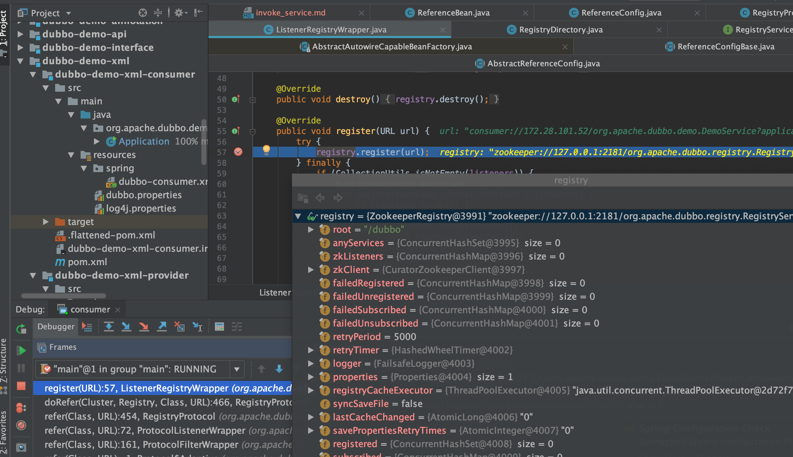

TreeviewCopyright @doctording all right reserved, powered by aleen42
服务引用(消费者启动)
服务引用的目的：服务消费者向注册中心订阅服务提供者提供的服务地址，并生成服务接口的实际代理对象。
- 把服务引用的信息封装成URL并注册到zk注册中心;
- 监听注册中心的服务的上下线;
- 连接服务提供端，创建NettyClient对象;
- 将这些信息包装成
DubboInvoker消费端的调用链，创建消费端Invoker实例的服务代理并返回;
源码走读
org.apache.dubbo.config.spring.schema.DubboNamespaceHandler#initorg.apache.dubbo.config.ReferenceConfig#createProxy
org.apache.dubbo.registry.integration.RegistryProtocol#refer
org.apache.dubbo.registry.integration.RegistryProtocol.doRefer
private <T> Invoker<T> doRefer(Cluster cluster, Registry registry, Class<T> type, URL url) {
//构建RegistryDirectory,可以把它理解为注册资源,其中包含了消费者/服务/路由等相关信息
//其同时也是回调监听器
RegistryDirectory<T> directory = new RegistryDirectory<T>(type, url);
directory.setRegistry(registry);
directory.setProtocol(protocol);
URL subscribeUrl = new URL(Constants.CONSUMER_PROTOCOL, NetUtils.getLocalHost(), 0, type.getName(), directory.getUrl().getParameters());
if (!Constants.ANY_VALUE.equals(url.getServiceInterface())
&& url.getParameter(Constants.REGISTER_KEY, true)) {
//向注册中心注册服务消费者
registry.register(subscribeUrl.addParameters(Constants.CATEGORY_KEY, Constants.CONSUMERS_CATEGORY,
Constants.CHECK_KEY, String.valueOf(false)));
}
// 从注册中心订阅服务提供者（即引用的服务）
directory.subscribe(subscribeUrl.addParameter(Constants.CATEGORY_KEY,
Constants.PROVIDERS_CATEGORY
+ "," + Constants.CONFIGURATORS_CATEGORY
+ "," + Constants.ROUTERS_CATEGORY));
//
return cluster.join(directory);
}
url:consumer://172.28.101.52/org.apache.dubbo.demo.DemoService?application=demo-consumer&category=consumers&check=false&dubbo=2.0.2&init=false&interface=org.apache.dubbo.demo.DemoService&metadata-type=remote&methods=sayHello,sayHelloAsync&pid=75487&qos.port=33333&side=consumer&sticky=false×tamp=1606215560930

zk上可以看到注册的consumer

org.apache.dubbo.registry.integration.RegistryDirectory#subscribe
注册监听服务
org.apache.dubbo.rpc.proxy.javassist.JavassistProxyFactory#getProxy
创建代理
public class JavassistProxyFactory extends AbstractProxyFactory {
@Override
@SuppressWarnings("unchecked")
public <T> T getProxy(Invoker<T> invoker, Class<?>[] interfaces) {
return (T) Proxy.getProxy(interfaces).newInstance(new InvokerInvocationHandler(invoker));
}
@Override
public <T> Invoker<T> getInvoker(T proxy, Class<T> type, URL url) {
// TODO Wrapper cannot handle this scenario correctly: the classname contains '$'
final Wrapper wrapper = Wrapper.getWrapper(proxy.getClass().getName().indexOf('$') < 0 ? proxy.getClass() : type);
return new AbstractProxyInvoker<T>(proxy, type, url) {
@Override
protected Object doInvoke(T proxy, String methodName,
Class<?>[] parameterTypes,
Object[] arguments) throws Throwable {
return wrapper.invokeMethod(proxy, methodName, parameterTypes, arguments);
}
};
}
}

org.apache.dubbo.rpc.protocol.dubbo.DubboProtocol#protocolBindingRefer

建立连接
/**
* Create new connection
*
* @param url
*/
private ExchangeClient initClient(URL url) {
// client type setting.
String str = url.getParameter(CLIENT_KEY, url.getParameter(SERVER_KEY, DEFAULT_REMOTING_CLIENT));
url = url.addParameter(CODEC_KEY, DubboCodec.NAME);
// enable heartbeat by default
url = url.addParameterIfAbsent(HEARTBEAT_KEY, String.valueOf(DEFAULT_HEARTBEAT));
// BIO is not allowed since it has severe performance issue.
if (str != null && str.length() > 0 && !ExtensionLoader.getExtensionLoader(Transporter.class).hasExtension(str)) {
throw new RpcException("Unsupported client type: " + str + "," +
" supported client type is " + StringUtils.join(ExtensionLoader.getExtensionLoader(Transporter.class).getSupportedExtensions(), " "));
}
ExchangeClient client;
try {
// connection should be lazy
if (url.getParameter(LAZY_CONNECT_KEY, false)) {
client = new LazyConnectExchangeClient(url, requestHandler);
} else {
client = Exchangers.connect(url, requestHandler);
}
} catch (RemotingException e) {
throw new RpcException("Fail to create remoting client for service(" + url + "): " + e.getMessage(), e);
}
return client;
}
进入org.apache.dubbo.remoting.exchange.support.header.HeaderExchanger#connect
接着进入org.apache.dubbo.remoting.Transporters#connect
public static Client connect(URL url, ChannelHandler... handlers) throws RemotingException {
if (url == null) {
throw new IllegalArgumentException("url == null");
}
ChannelHandler handler;
if (handlers == null || handlers.length == 0) {
handler = new ChannelHandlerAdapter();
} else if (handlers.length == 1) {
handler = handlers[0];
} else {
handler = new ChannelHandlerDispatcher(handlers);
}
return getTransporter().connect(url, handler);
}

最终得到的是代理对象